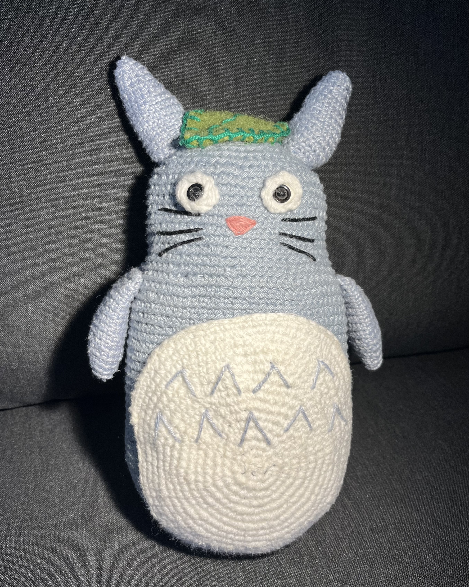
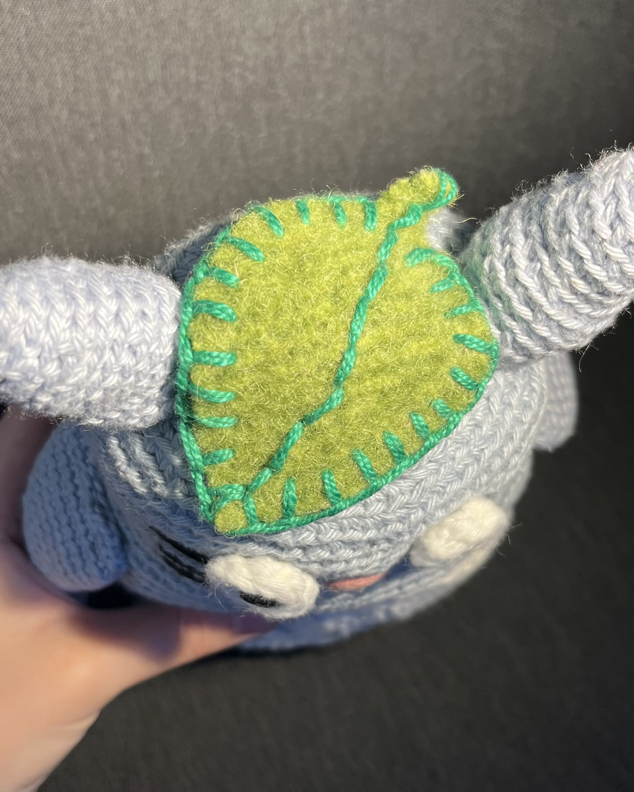
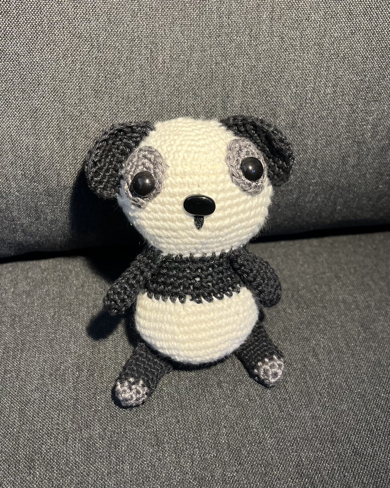
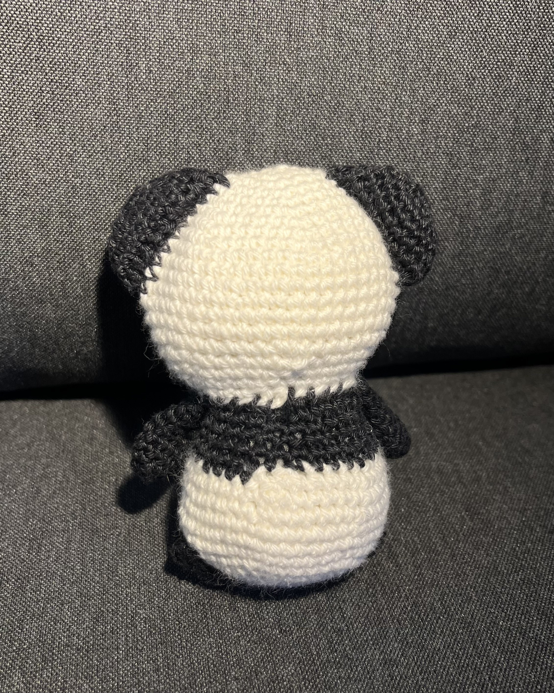

Hello!
Welcome to a presentation of some of my crochet projects.
I hope you enjoy them!
1. Totoro
 
First project:
This was my first ever crochet project! I made it three years ago while I had an internship at an activity center for people with special needs.
Most people there knew how to crochet or knit, so I got a lot of help from everybody. My supervisor even freestyled a pattern for me.
I think I did great considering it was my first time, I especially like the leaf on top of his head!
2. The jellyfish


Second project:
This is a jellyfish that I like to crochet because it's small and easy to make. I also like it because I think jellyfish are pretty cool.
I usually give them away to my parents or friends because I don't have any use for a pile of crocheted jellyfish.
I've considered making a garland of jellyfish in the future though...
3. The panda
 
Third project:
This panda is actually my most recent project that I made a few weeks ago.
I think it turned out pretty well, but unfortunaly I forgot to give it a tail and I'm not very satisfyed with the circles around the eyes.
It's still cute though!